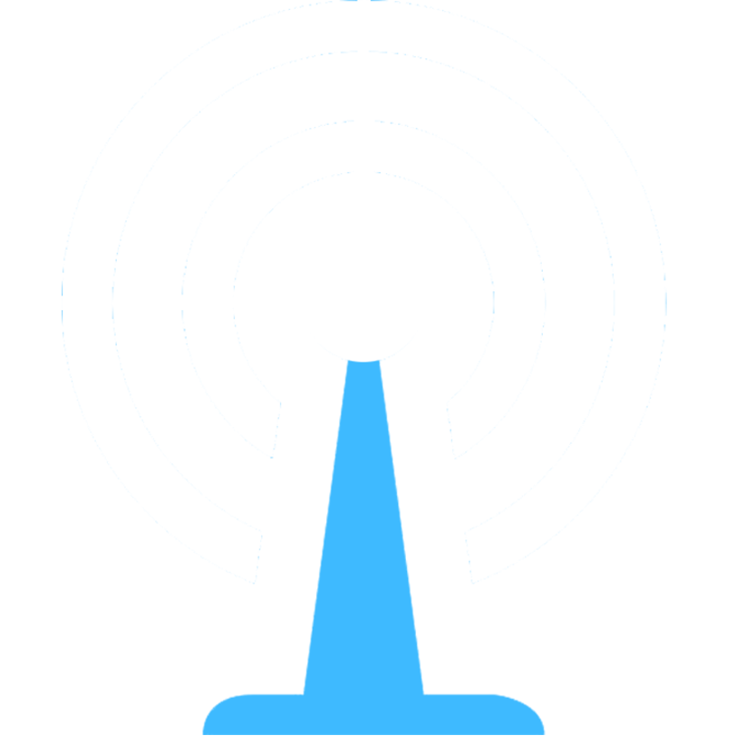

<ion-view title="">
  <ion-nav-buttons side="left">
    <button menu-toggle="left" class="button button-icon icon ion-navicon"></button>
  </ion-nav-buttons>
  <ion-content class="has-header">
      
      
  </ion-content>
</ion-view>